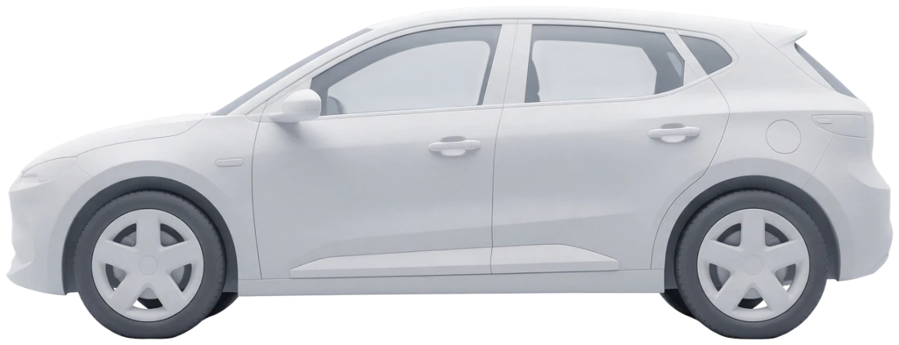

Meus veículos
Escolha qual veículo usar nas recargas. O principal aparece na home.
Principal

Tipo 2 · 6,6 kW
CCS2 · 60 kW
Outros veículos
Volvo EX30FTR-8B22 · Particular
Chevrolet Spark EUVQWE-4F12Aplicativo
Escolha qual veículo usar nas recargas. O principal aparece na home.

 Volvo EX30FTR-8B22 · Particular
Volvo EX30FTR-8B22 · Particular
 Chevrolet Spark EUVQWE-4F12Aplicativo
Chevrolet Spark EUVQWE-4F12Aplicativo